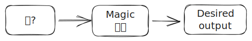

CAS Hochschuldidaktik
Eine Einführung in KI-basierte Schreibtools in der Lehre
Orientierungshilfe für Lehrpersonen der BFH
Haltung der BFH: Technologien, die den Lernprozess unterstützen und praxisrelevant sind, sollen in die Lehre einbezogen werden.
Einsatz von KI in der Lehre: Die Mehrheit der Studierenden wird KI-Tools nutzen. Studierende sollen lernen, Technologien kompetent einzusetzen und kritisch zu hinterfragen.
Take-home messages
- KI-Tools selber ausprobieren
- Effektive Prompting-Strategien kennenlernen
- KI-Kompetenz in der Lehre fördern
- Output von KI-Tools kritisch evaluieren
Assistant Menagerie
| Assistant | Provider | Privacy | LLM | Capabilities | Pricing model |
|---|---|---|---|---|---|
| ChatGPT | OpenAI | üëéüèº | GPT-3.5, GPT-4 | Web search, DALLE, GPTs, multimodal input | üí∂ |
| Copilot | Microsoft | üëçüèº | GPT-3.5, GPT-4 | Web search, DALLE, multimodal input | üÜì F√ºr BFH Mitarbeitende/Studierende |
| Gemini | üëéüèº | Gemini Ultra/Pro/Nano | Web search, multimodal input | üí∂ | |
| HuggingChat | ü§ó Hugging Face | üëçüèº | Open models (CodeLlama, Llama 2, Mistral, Gemma) | üÜì |
Prompting

Was ist ein Prompt?
- Das Ziel eines LLM ist es, Text zu vervollständigen.
- Ein Prompt ist der Input (Anweisung) eines Sprachmodelles.
Write a haiku about a workshop on large language models.
Whispers of circuits, Knowledge blooms in bytes and bits, Model learns and fits.
- Die Antwort wird als Fortsetzung des Prompts generiert.
Fähigkeiten freischalten
- LLMs lernen Aufgaben zu lösen, für die sie nicht trainiert wurden.
- Fähigkeiten müssen durch den richtigen Prompt “freigeschaltet” werden.

- Was ist der richtige Prompt?
- Sehr ähnlich zu dem, was man einem menschlichen Dialogpartner/Assistenten sagen würde.
- Chancen, die gewünschte Ausgabe zu erhalten, werden durch gute Fragen oder genügend Informationen erhöht.
Grundlagen des Prompting
- OpenAI gibt eine Reihe von Strategien für die effektive Nutzung ihrer Modelle.
Diese beinhalten:
- klare Anweisungen schreiben
- Referenztexte bereitstellen
- Aufgaben in Teilaufgaben unterteilen
- dem LLM ‘Zeit zum Nachdenken’ geben
- externe Tools verwenden
Klare Anweisungen schreiben
- Teile einem LLM mit, welche Art von Gespräch du führen möchtest.
- Anweisungen sollten klar und eindeutig sein.
- Gib an, welche Rolle (Persona) das Modell übernehmen soll.
- Gib Details in deiner Anfrage an, um relevantere Antworten zu bekommen
- Bitte das Modell, eine Persona zu übernehmen
- Verwende Trennzeichen, um klar auf die unterschiedlichen Teile der Eingabe hinzuweisen
- Gib die Schritte an, die zur Durchführung einer Aufgabe erforderlich sind
- Gib Beispiele
- Gib die gewünschte Länge der Ausgabe an
Eine Rolle zuweisen
You are an expert on learning techniques. Explain the concept of ‘flipped classroom’ in one paragraph.
You are an expert on financial derivatives. Explain the concept of ‘flipped classroom’ in one paragraph.
Referenztexte bereitstellen
- Stelle einem Modell vertrauenswürdige und relevante Informationen zur Verfügung.
- Weise das Modell an, die bereitgestellten Informationen zur Erstellung der Antwort zu verwenden.
Weise das Modell an, eine Antwort unter Verwendung eines Referenztextes zu geben
Einem LLM ‘Zeit zum Denken’ geben
- LLMs generieren Text ein Wort nach dem anderen - das Modell verwendet die gleiche Menge an Berechnung für jedes Wort.
- Wenn das Modell gezwungen wird, mehr Text zu produzieren, hat es mehr Schritte um “Nachzudenken”.
Das Modell wird eine bessere Antwort geben.
- Diese Technik ist bekannt als chain-of-thought-Prompting und kann oft einfach durch die Anweisung an das Modell induziert werden, “Schritt für Schritt zu denken” (
think step-by-step) oder “Nimm dir einen Moment Zeit und arbeite dieses Problem Schritt für Schritt durch” (Take a deep breath and work on this problem step-by-step)(Yang et al. 2023). - Copilot und ChatGPT machen dies seit Neuem automatisch.
Markdown-Formatierung verwenden
- Verwende Markdown zur Formatierung deiner Prompts.
- Weise das LLM an, den Output mit Markdown zu formatieren.
Improve this haiku:
## Whispers of circuits
Words weave through the air,
Minds meld with machine's deep thought,
Knowledge blooms anew.
It is about about a workshop on large language models. I'm not happy with the phrase " machine's deep thought".
Show me all the text. Format the text you added as _TEXT_ and show me the deleted text formatted as ~~TEXT~~ in the new haiku. Keep you review short (max 100 words).Fortgeschrittene Prompting-Techniken
Weiterführende Information zu Prompting-Techniken:
Wofür sind LLMs gut?
- Korrigieren von Grammatik, schlechtem Stil, usw.
- Umschreiben/Paraphrasieren von Texten
- Analysieren von Texten (Argumentation, Stil, usw.)
- Übersetzen von Sprachen
- Erstellen von strukturiertem Output
- Schreiben von Computercode
- Beantworten von Fragen zu einer Wissensbasis
- Faktische Ausgabe nur mit RAG oder Websuche
Übungen
Fortgeschrittene LLM-Techniken

Retrieval-augmented Generation (RAG)

Abbildung von Pinecone
Websuche
- Ähnlich wie die Retrieval-augmented Generation, aber mit Websuche.
- LLMs können angewiesen werden, die Websuche zur Informationsbeschaffung zu nutzen.
- LLM fasst die Informationen zusammen und benutzt sie als Referenztext zur Beantwortung der Frage.
- Copilot macht dies automatisch - ChatGPT (nur kostenpflichtige Version) kann angewiesen werden, dies zu tun.
Externe Werkzeuge
- LLMs können angewiesen werden, externe Werkzeuge zur Aufgabenerfüllung zu nutzen.
- Zum Beispiel kann ein LLM angewiesen werden, einen Taschenrechner zur Durchführung von Rechenoperationen zu verwenden.
- OpenAI nennt diesen Ansatz Funktionsaufruf.
Lokale Modelle
- Laden Sie Modelle herunter und führen Sie sie lokal aus, wie z.B. Llama 2 oder Code Llama.
- Ollama
- LM Studio
Hardwareanforderungen:
- Apple Silicon Mac (M1/M2/M3) / Windows / Linux
- Es wird empfohlen, 16GB+ RAM zu haben
- NVIDIA/AMD GPUs werden unterstützt